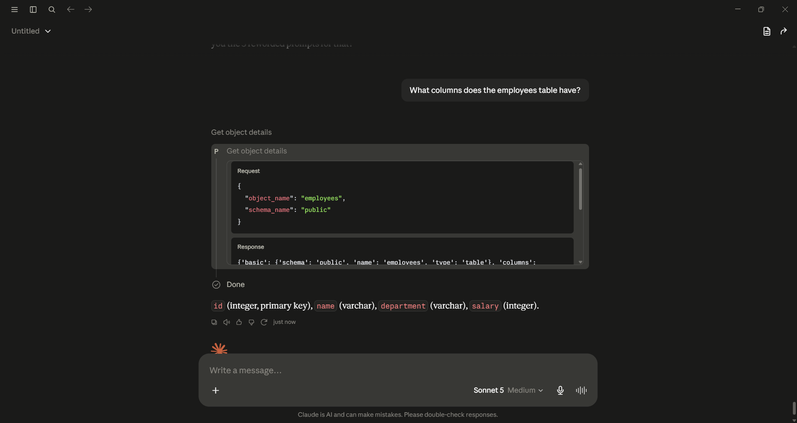
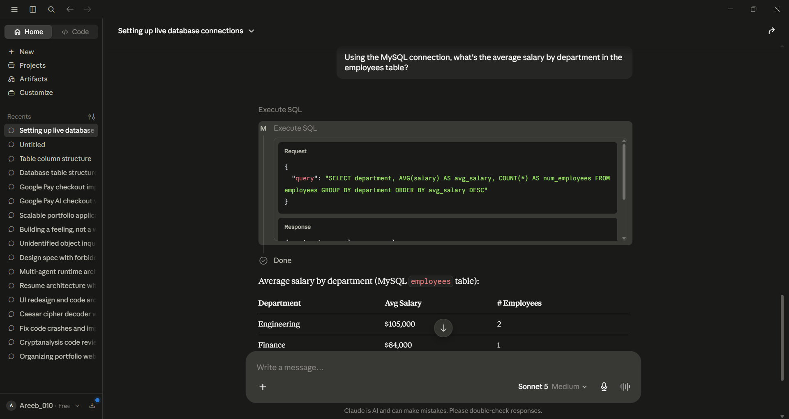
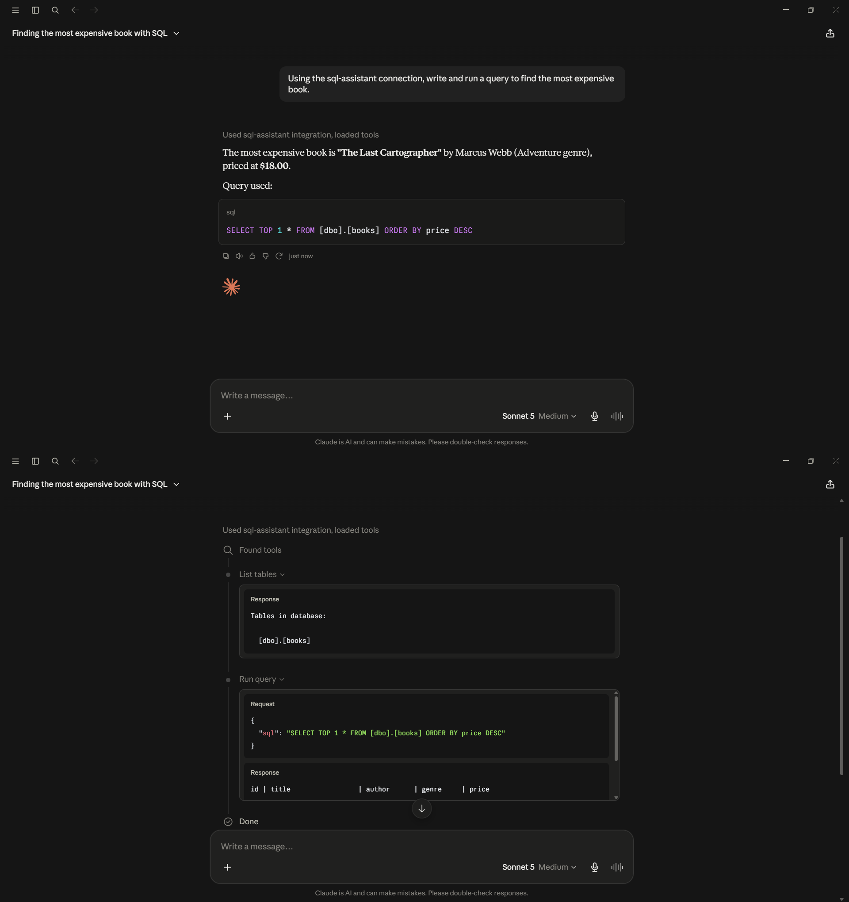
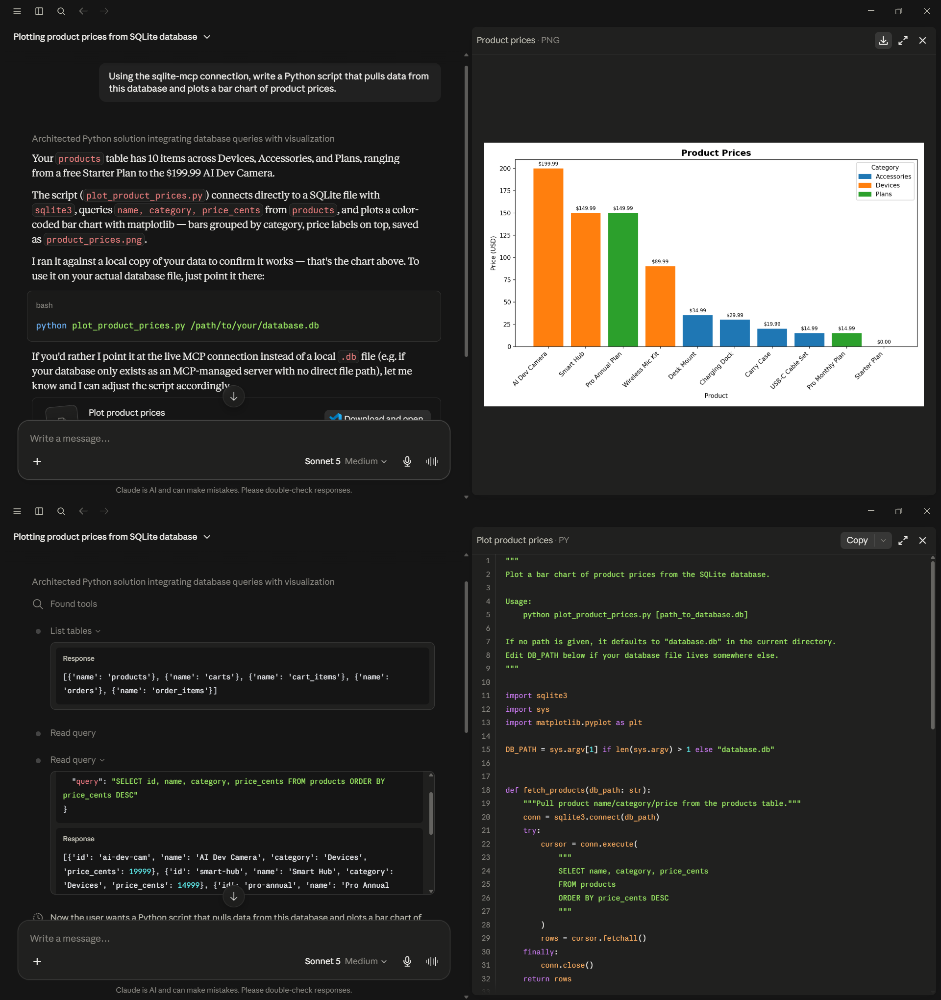
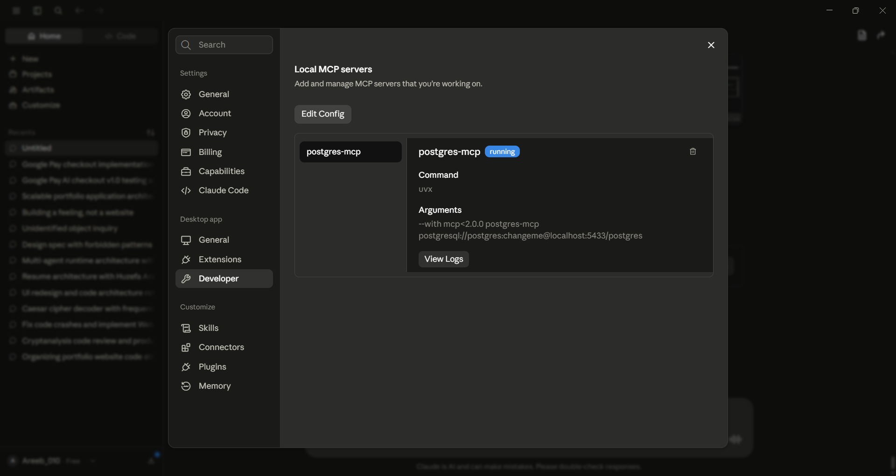

Connecting Claude Desktop to PostgreSQL · MySQL · SQL Server · SQLite through MCP — one protocol, four engines, 16 validated live queries.
Chat UIs have no built-in way to reach a database running on your own machine — no connection, no SQL tooling.
Setup guides referenced dead npm packages, deprecated images, and servers that speak HTTP instead of stdio.
The mcp Python SDK shipped a breaking 2.0.0 with zero warning — every server crashed with ModuleNotFoundError.
Postgres, MySQL, SQL Server, SQLite — each with a different MCP server, install path, and quirk.
Model Context Protocol defines how assistants discover and call tools — a universal contract, not a vendor API.
Everything runs on the machine over stdio. Data never leaves it — the AI talks to a wrapper, not your live systems directly.
Same architecture implemented against 4 database engines, each with its own server but the same client wiring.
Postgres & MySQL run in Docker; SQL Server in Docker (with an ODBC driver on the host); SQLite is just a file — no container at all.
| Database | MCP server | Install | Sample data |
|---|---|---|---|
| PostgreSQL | postgres-mcp | uvx + pinned mcp<2.0.0 | employees |
| MySQL | mysql-mcp-server | uvx — clean first try | employees (2nd dataset) |
| SQL Server | sql-mcp-server | pip + force-pinned mcp | books |
| SQLite | mcp-server-sqlite | uvx + --db-path | e-commerce store |
Distinct datasets on purpose — so a single chat session can prove which database answered.
The same 4 prompts run against every database, with the tool-call panel visible in screenshots:

PostgreSQL
MySQL
SQL Server
SQLite
MCP statusEvery server crashed with ModuleNotFoundError: 'mcp.server.fastmcp'. Fix: pin mcp<2.0.0.
openmcpserver/mcp-postgres runs an HTTP server, not stdio — useless for Claude Desktop. Fix: uvx postgres-mcp instead.
@modelcontextprotocol/server-postgres is dead; @crystaldba/postgres-mcp isn't on npm at all.
A native Windows Postgres service was silently intercepting connections. Fix: remapped the container to :5433.
For SQL Server, uvx picked mcp 2.0.0 again. Fix: pip install sql-mcp-server + --force-reinstall "mcp<2.0.0".
POSTGRES_PASSWORD only applies on first init. Fix: ALTER USER from inside the container.
POSTGRES_READ_ONLY=true is enforced at the MCP wrapper level — the assistant can inspect, not mutate.
Passwords live in gitignored .env; only .env.example placeholders are committed.
The demo database is never committed — a real e-commerce schema would hold real customer data.
Honest limitation documented: wrapper-level read-only is weaker than a real GRANT SELECT role — noted as the upgrade path.
Dockerized Postgres, MySQL, SQL Server — ports, volumes, init behavior, and host-to-container networking.
Schema design and seed data across four SQL dialects, from flat employees tables to relational carts/orders.
Working knowledge of MCP: stdio servers, tool contracts, and how assistants discover & call them.
Diagnosing a breaking transitive dependency, pinning versions, and escaping "works on my machine" traps.
Credential handling, read-only enforcement, and knowing where the boundary actually is.
A full build log of failures, 20+ validation screenshots, and a repo structured for a portfolio.
Step-by-step guides for all four databases, validation screenshots, and the complete planning history.
One README per database under config/<db>/ — commands, configs, and gotchas.
Happy to run a live demo — "What columns does the employees table have?"